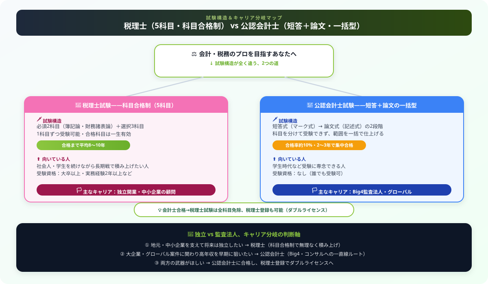

税理士 vs 公認会計士 どっちを目指すべき？難易度・年収・将来性を徹底比較【2026年版】
こんにちは、大谷です！
僕は今、公認会計士試験の合格を目指して累計3,000時間を超える猛勉強を積み上げている真っ最中の受験生です。実はこの記事のテーマ「税理士か、会計士か」は、僕自身が受験生活の入り口で本気で悩んだ問題そのもの。周りの友人にも税理士ルートを選んだ人、会計士ルートを選んだ人、両方いるので、どちらの「本音」もリアルに聞いてきました。
ネットの比較記事だと数字を並べただけで終わりがちですが、この記事では「なぜその試験制度になっているのか」「どういう人生設計の人に向いているのか」まで、当事者目線で踏み込んで解説します。
記事の最後に僕からの応援メッセージもあるので、最後まで読んでもらえると嬉しいです！
「税理士と公認会計士、どちらを目指せばいい？」会計・税務のプロフェッショナルとして日本最高峰の2資格。どちらも難関ですが、試験制度・キャリアパス・年収・独立の形が大きく異なります。本記事では両資格を徹底比較し、あなたの目標に最適な選択を解説します。

基本情報の比較
| 項目 | 税理士 | 公認会計士 |
|---|---|---|
| 試験主催 | 国税庁 | 金融庁 |
| 試験回数 | 年1回（8月） | 年2回（5月・8月） |
| 合格率（全体） | 科目・年度により8〜30%程度 | 約7〜11%（最終合格率） |
| 必要勉強時間 | 3,000〜5,000時間（全科目） | 3,000〜4,000時間 |
| 科目合格制 | あり（5科目を段階的に） | なし（一括合格） |
| 平均合格年齢 | 30〜40代が多い | 20代後半が中心 |
| 主な就職先 | 税理士事務所・会計事務所 | Big4監査法人・コンサル |
試験制度の大きな違い
税理士試験：科目合格制
税理士試験は必須2科目（簿記論・財務諸表論）＋選択科目3科目の計5科目を合格する必要があります。各科目を別々の年度に受験・合格できる「科目合格制」が最大の特徴です。
- 社会人しながら1〜2科目ずつ合格を積み上げられる
- 一度合格した科目は一生有効
- 全科目合格まで平均8〜10年かかる場合も
- 受験資格：大卒以上、実務経験2年以上など
公認会計士試験：短答＋論文の一括型
公認会計士試験は「短答式試験（マーク式）」と「論文式試験（記述式）」の2段階です。短答式に合格した後、同年または翌年の論文式試験に合格する必要があります。
- 短答式合格は2年間有効（再受験の猶予あり）
- 論文式合格後、2〜3年の実務補習（修了考査）を経て登録
- 受験資格：なし（誰でも受験可）
- 学生時代の集中学習で取得するケースが多い
年収の比較
| キャリアパス | 税理士 | 公認会計士 |
|---|---|---|
| 勤務（5年目） | 500〜700万円 | 700〜1,000万円（Big4） |
| 勤務（10年目） | 700〜900万円 | 1,000〜1,500万円（マネージャー） |
| 独立開業 | 400〜2,000万円以上（幅大） | 税理士登録後600〜2,000万円 |
| Big4勤務パートナー | — | 3,000万円超 |
公認会計士はBig4（Big4監査法人）での勤務であれば新卒でも600〜800万円スタートと高水準です。一方、税理士は独立後の顧問先数によって収入が大きく変動します。
将来性の比較
AI・自動化の影響
税務申告・記帳代行などの定型業務はAI自動化の影響を受けやすいとされます。しかし「税務相談・節税提案・事業承継」などの付加価値業務は人間の強みが続きます。公認会計士の監査業務も一部自動化が進んでいますが、判断・交渉・コンサルティング領域は堅調です。
マーケット規模
- 税理士：約8万人、中小企業の顧問需要は安定
- 公認会計士：約4万人、上場企業の監査義務により需要安定
- どちらも独占業務があり、AIに完全に代替される可能性は低い
タイプ別おすすめ
| あなたのタイプ | おすすめ | 理由 |
|---|---|---|
| 社会人・仕事しながら取りたい | 税理士 | 科目合格制で無理なく積み上げられる |
| 学生・受験専念できる | 公認会計士 | 2〜3年で合格→高年収スタート |
| 独立・地元で開業したい | 税理士 | 中小企業顧問で安定した独立が可能 |
| 大企業・グローバルキャリア志向 | 公認会計士 | Big4・コンサルへのパス |
| 会計・税務の両方を武器にしたい | 公認会計士 | 公認会計士合格→税理士登録が可能 |
どっちの道を選んでも、努力の量は本物になる
税理士も公認会計士も、生半可な気持ちでは合格できない資格です。僕自身、会計士試験のために積み上げた3,000時間を振り返ると、途中で何度も心が折れかけました。でも「科目合格制で長期戦を選ぶか」「一括合格型で短期集中するか」、その選択自体に正解・不正解はありません。大事なのは自分のライフステージと本気で向き合って決めること。今この記事を読んで比較検討しているあなたは、もうすでにスタートラインに立っています。僕も同じ受験生として全力で応援しているので、焦らず一歩ずつ進んでください。執筆のモチベーション維持のために、この下にある【いいねボタン】をポチッと押してもらえると、めちゃくちゃ嬉しいです！